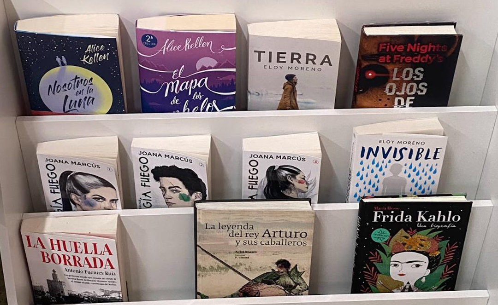

ATENCIÓN
Has sido sancionado por incumplir alguna de las normas de la biblioteca. No podrás reservar un nuevo libro hasta el X/Y/Z.
Novelas recomendadas para el mes de marzo
Publicado el 15 de marzo de 2024

En el mes de marzo, la biblioteca del IES Antonio Machado te recomienda las siguientes novelas:
- Nosotros en la Luna, de Alice Kellen: Una emocionante historia de amor ambientada en el espacio, perfecta para los amantes del romance y la ciencia ficción.
- El mapa de los cielos, de Alice Kellen: Una novela que nos sumerge en un viaje de autodescubrimiento a través de lugares mágicos y personajes inolvidables.
- Tierra, de Lloy Moreno: Una obra que aborda temas de ecología y conciencia medioambiental, invitándonos a reflexionar sobre nuestro impacto en el planeta.
- Five Nights at Freddy's, los ojos de plata, de Kira Breed-Wrisley y Scott Cawthon: Una fascinante aventura de terror basada en el famoso videojuego, garantizada para mantenerte en vilo hasta la última página.
- Trilogía Fuego, de Joana Marcús: Una épica saga fantástica llena de acción, magia y personajes inolvidables que te transportará a un mundo lleno de aventuras.
- Invisible, de Lloy Moreno: Una historia conmovedora que aborda temas de invisibilidad social y superación personal, ofreciendo una mirada profunda a la vida de aquellos que a menudo son pasados por alto.
- La huella borrada, de Antonio Fuentes Ruiz: Un thriller emocionante que te mantendrá al borde del asiento con giros inesperados y una trama intrigante.
- La Leyenda del Rey Arturo y sus caballeros, de Antoni Dalmases: Una reinterpretación moderna de las legendarias historias del Rey Arturo y la mesa redonda, perfecta para los amantes de la fantasía y la aventura.
- Frida Kalho: Una biografía, de María Hesse: Una obra que nos sumerge en la fascinante vida y obra de la icónica artista mexicana, ofreciendo una visión íntima y reveladora de su legado.